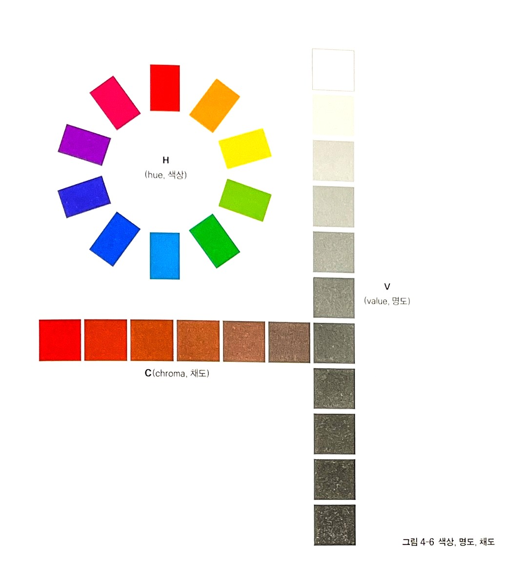
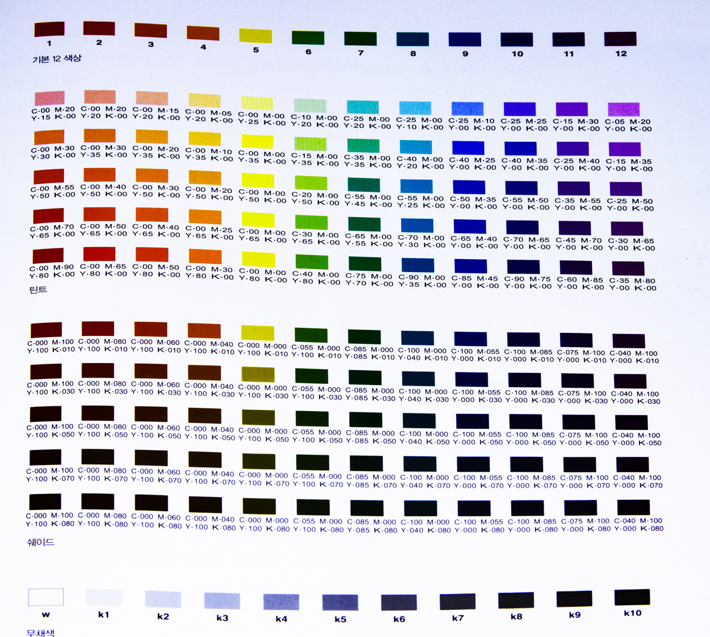
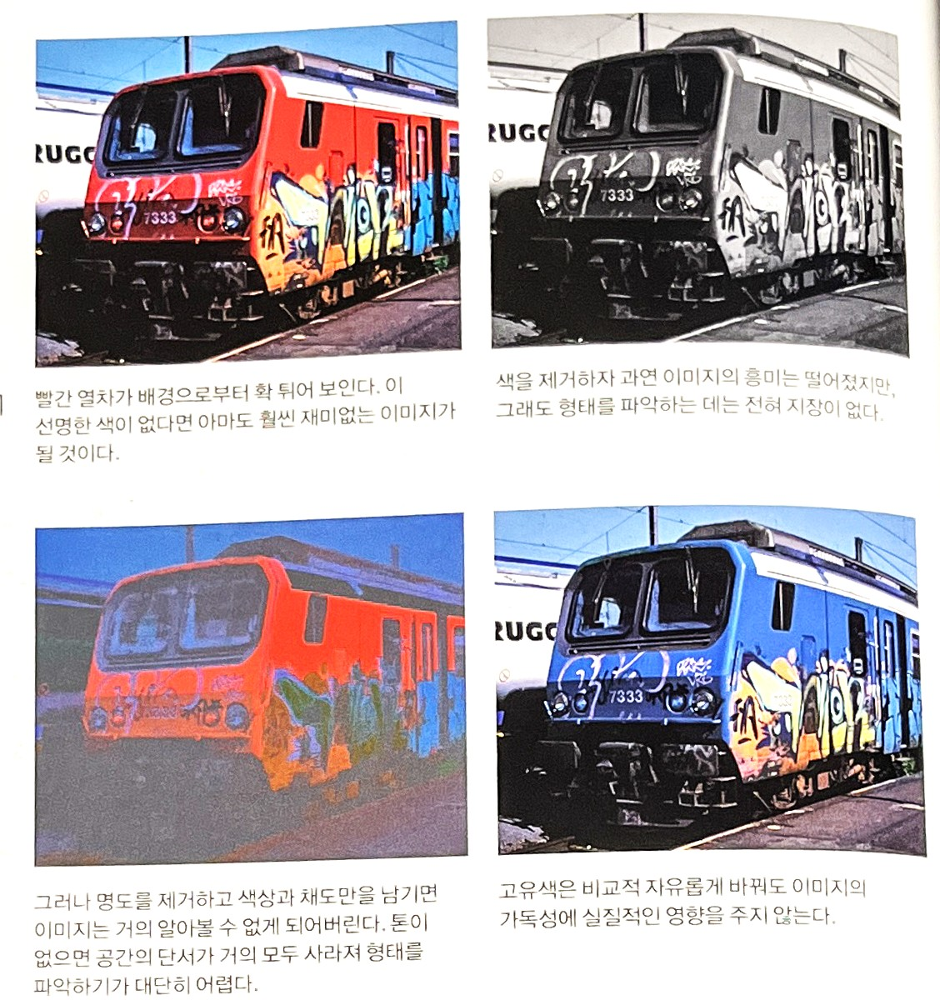
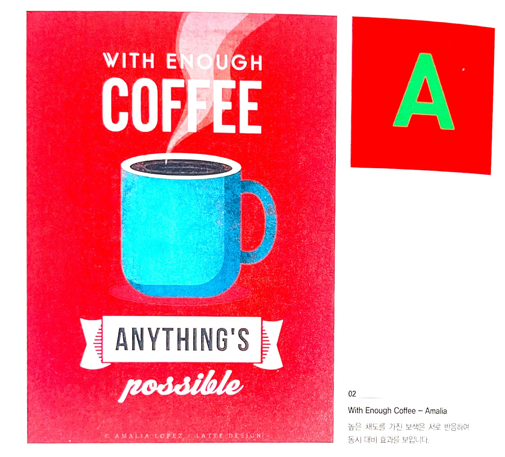
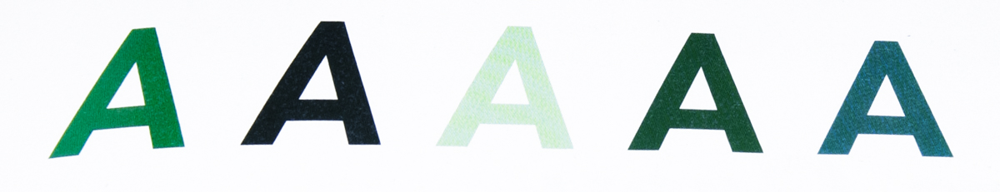
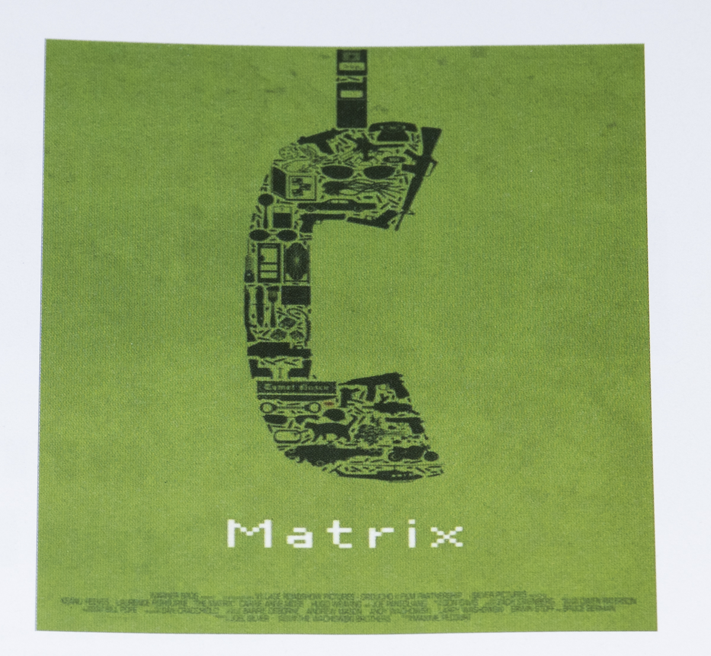
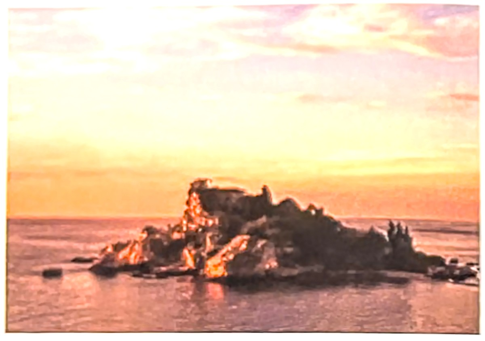
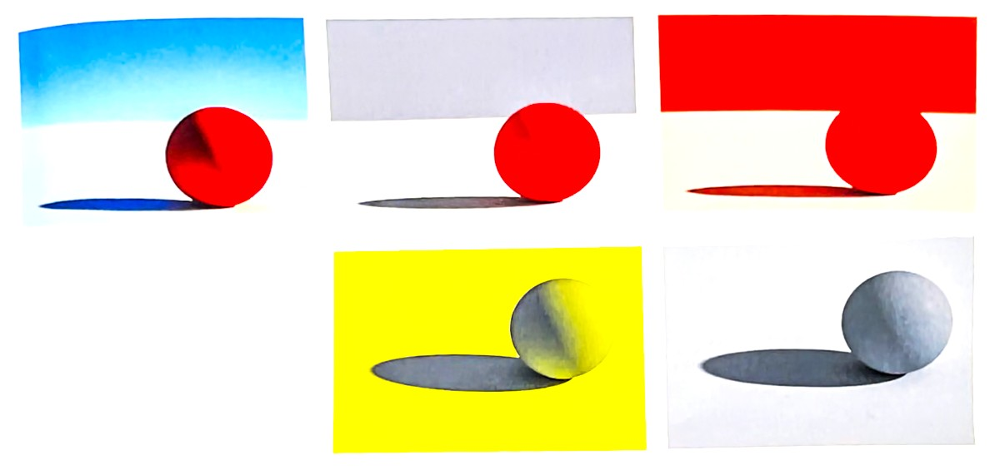

색은 어떤 요소로 이루어져 있을까? 색은 어떻게 분리해서 전달하고 관리하는 것이 효과적일까? 색채를 정확하게 구별하거나 인식하고 전달하기 위해 필요한 것은 색채의 구성요소를 정확히 이해하는 것이다. 색채 용어의 기본이 되는 3속성과 관련된 용어의 정의는 매우 중요하다. 색채와 관련된 산업이나 기계 등의 개발과 발전을 위해 정확한 의미를 알아야 한다.
1987년 국제조명위원회CIE, Commission Internationalale de l'Eclairage에서 발행된 국제조명용어International Lighting Vocabulary에는 950여 종의 색과 조명용어가 실려 있다. 이 연구는 미국위 표준ASTM 1995이 되었으며, 한국산업표준KSA 0064의 기본이 되었다.
최근 디지털 색채 체계가 부각됨에 따라 기존의 전통적인 3속성에 대한 개념과 해석은 다양한 색의 출현으로 바뀌고 복잡한 요소를 띠게 되었다. 따라서 기존의 여러 용어는 새롭게 정의되어야 한다.
색이 3요소로 구별되는 것에는 '인간은 무엇이 변하였을 때 색을 다르게 인식하는가?라는 물음에서 출발한다. 그 답은 그라스만Hermann Gunther Grassmann이 제안한 색상, 명도, 채도의 3요소로 색의 변화를 인지하는 인간의 지각 구조를 기본으로 한다. 색채학자들마다 3요소를 부르는 용어와 의미가 조금씩 다르지만 그 기본은 그라스만의 색채변화이론에 근거한다. 디지털시스템을 포함한 새로운 3속성의 정의는 다음과 같다.
새로운 개념의 색상, 명도, 채도는 각 매체가 RGB, Y-B R-G, 도료, 염료 등으로 세분화되어 각각의 특성을 나타내므로 의미와 원리가 다르게 적용된다. 따라서 전통적인 도료나 염료 중심의 3속성에서는 명도 10에서 채도란 있을 수 없지만 RGB 체계나 L*a*b*체게에서는 L*가 100일 때 높은 수치의 순색량saturation 이 나올 수 있다.
먼셀에 의해 제안된 색상, 명도, 채도의 그림과 분광광도계 spectrophotometer 측색기에서 나타나는 명도, 채도, 색상의 구분은 다음 그림과 같다. 분홍색과 빨간색은 색상은 같지만 채도와 명도가 다르다. 빨간색이 색상의 포화도가 높고더 빨갛고 명도는 낮다어둡다. 전통적인 먼셀 색체계는 색을 색상, 명도, 채도로 구성하고 있으며, 흰색을 색으로 본 오스트발트색체계에서 색의 요소는 색상, 흑색량blackness, 백색량whiteness, 순색량으로 구성되어 있다. 이 두 색체계는 기본적으로 세 가지의 구성 요소를 갖고 있다.
색상, 명도, 채도의 개념
색상hue색에 대해서 말할 때, 우리는 대개 색상hue을 떠올린다. 색상은 각각을 진단할 수 있는 파장에 따라 광학적으로 나타나는 유일하고 명확한 색이다. 따라서 ‘빨강’은 항상 7,604 옹스트롬의 파장을 유지한다. 이는 광학적인 관점에서 정의한 색의 개념이지만, 색상을 지각하고 분류하는 과정에서 무수히 많은 변화가 있다. 오늘날 우리는 기본적인 일곱 가지 스펙트럼 색상 (빨강, 주황, 노랑, 녹색, 파랑, 남색, 보라)을 이용해 생활하고 있다.[3]
태양 광선을 분광해서 나누었을 때 보이는 주파수 길이에 따른 무지개 형상의 여러 종류를 색상이라한다. 물리적으로는 색상이란 빛의 주파수 파장의 길이에 따른 주파수 영역이 구별된 각각의 파장을 말한다. 따라서 톤색의 밝기 또는 색의 많고 적음과 관계없이 그 색이 어떤 색상 계열인가 하는 것에만 속한다. 예를 들어 하늘색과 파란색, 짙은 남색 모두 파랑으로 정의한다. 먼셀Albert Munsell은 다섯 가지 원색의 배열로 색을 정의하고 헤링Ewald Hering은 네 가지 원색의 조합으로 설명하였다.[4]
명도lightness, brightness, value인간의 눈은 명도에 가장 민감하다.색상과 관계없이 밝고 어두움을 표시하며 가장 밝은 것을 흰색이라 할 수 있다. 또 완전 확산 반사로 설명할 수 있다. 완전 확산 반사는 거울과는 다른 무광택 흰색 면의 반사된 빛을 말한다. 거울은 주위의 모든 색채를 대칭적으로 직접 반사한다. 그러나 완전 반사되는 흰색은 자신에게 방사된 빛을 분산해서 반사하는 것을 말한다. 반면 가장 어두운 색인 완전 흡수체는 물체로서 존재하지 않는다. 그 이유는 완전 흡수체란 반사가 되지 않는 무한한 공간을 의미하기 때문이다.[4]
보다 세분화된 정의로 'brightness'는 빛 자체가 강하고 약하게 발하는 것과 관계되고, 'lightness'는 백색면에 동일한 강도의 빛을 비추었을 때 이와 비교하여 밝기를 판단하는 기준이다. 'value'는 먼셀 색체계에서 lightness의 개념이다.[4]
명도는 색의 밝고 어두운 정도로 실질적으로 색 현상을 바꾸는 변수이며, 활자와 색을 인지하고 읽는 데 있어 매우 중요한 요소로 작용한다. 색상에 흰색이나 검은 색을 가감하면 명도가 변하게 된다. 흰색이 더해진 색을 틴트라고 하며, 검은색이 더해지면 쉐이드라고 한다.[3-242p]
틴트는 흰색이 섞인 옅은 색상인데, 옅은 분홍색은 흰색을 풍부하게 함유하고 있으며 쉐이드는 기본색상에 검정색을 혼합하여 더 어두워진 색상이다. 한 색상은 농담(濃淡)에 상관없이 색상의 기본적인 성질을 모두 지니고 있으나 틴트인지 쉐이드인지에 따라, 즉 기본색에 비해 더 밝은지 어두운지에 따라 그 성격이 조금씩 달라진다.
일반적으로 틴트는 적극적인 색상으로, 셰드는 소극적인 색상으로 여겨진다. 정상적으로 밝은 명도의 순수색상노랑,주황,초록이 가장 좋은 틴트를 만들며 어두운 명도를 가진 색상빨강, 파랑, 보라은 가장 좋은 쉐이드를 만든다. 다음 칼러 팔레트는 기본 12색상환을 기본으로 틴트와 쉐이드의 스펙트럼을 보여주고 있다. 이 색상들을 보면 명도 변화가 색의 가능성을 화장시키는 것을 분명하게 알 수 있다.[3]
12색상환의 틴트와 쉐이드[3]
명도와 톤[5]색의 3속성 중 명도와 그로부터 나오는 톤은 형태 파악에서 가장 중요한 역할을 하는 요소다. 흑백사진을 보면 알다시피 이미지에서 모든 색 정보를 제거하고 톤만 남아 있으면 형태는 오히려 더 쉽게 파악된다. 그러나 반대로 톤이 없고 색만 있는 이미지는 형태를 분간하기가 더 어렵다.

① 빨간 열차가 배경으로부터 확 튀어 보인다.
선명한 색이 없다면 아마도 훨씬 재미없는 이미지가 될 것이다.
② 색을 제거하자 과연 이미지의 흥미는 떨어 졌지만
그래도 형태를 파악하는 데는 전혀 지장이 없다.
③ 그러나 명도를 제거하고 색상과 채도만을 남기면 이미지는
거의 알아 볼 수 없게 되어버린다.
톤이 없으면 공간의 단서가 거의 모두 사라져 형태를 파악하기가 아주 어렵다.
④ 고유색은 비교적 자유롭게 바꿔도 이미지의 가독성에 실질적인 영향을 주지 않는다.
현란하고 이질적인 색에도 불구하고 장면을 이해하는데는 지장이 없다. 우리 눈이 형태를 파악하고 해석하는 기준은 색상이 아닌 명도와 톤이기 때문이다.
채도saturation색상의 포함 정도로 어느 정도 색의 속성이 포함되어 있는가 하는 것이다. 물리적 측면에서는 특정 주파수대의 빛에 대해서 어느 정도로 반사 또는 흡수하고, 측정 반사율에서 최고 주파수와 최저 주파수 차이의 정도를 말한다. L*a*b*, Yxy등 색표준에서는 중심으로부터의 거리로 측정된다. 무채색은 색상의 기운이 전혀 없는 색이며 빛의 개념에서 'colorfulness'는 색상을 보여 주는 유채색성이 많고 적음을 의미하여 일반적인 채도의 개념을 표현하는 것이다.[4]
'chroma'는 일정한 면적에서 빛의 밝기가 유사한 백색면과 비교하여 백색도를 포함한 개념이다. 'saturation'은 'chroma'와 다르게 순수한 자체 빛의 밝기에서 나온 유채색성을 말한다. 따라서 유채색성이 많이 포함된 저채도색도 있을 수 있다.[4]
색도, 색밀도라 불리는 채도는 색상의 선명한 정도를 말한다. 혼색되지 않은 순수색이 가장 채도가 높으며 다른 어떤 색이라도 섞이면 선명도가 떨어진다. 흰색, 회색, 검은색 또는 보색을 가하게 되면 색 밀도가 매우 급격하게 떨어진다. 단일 색에 각각 다른 양의 보색을 섞어가면서 색 밀도를 떨어뜨려 변화시키 것을 톤tone이라고 한다. 보색이 아주 근접한 위에 있게 되면 색의 대비되는 강도는 서로 같이 증가하며 대비로 인한 반응을 동시대비라고 한다.[3]

With Enough Coffee = Amalia
높은 채도를 가진 보색은 서로 반응하여
동시대비 효과를 보인다.
다음 다섯 개의 글자는 채도의 원칙을 보여주는 예이다.
첫 번째 글자는 채도가 높아 가장 선명하게 보이고,
두 번째 글자는 검은색이 첨가되어 어두우며,
세 번째 글자는 흰색이 섞여 더 밝아졌다.
네 번째 글자는 초록색의 보색인 빨간색이 섞여 어둡고 탁해졌으며,
다섯 번째 글자는 파란색이 섞여서 첫 번째 글자보다 탁하다.[3]


매트릭스 패러디 포스터
동일한 색상 톤 안에서 채도를 활용한 포스터 디자인이다.[3]
광원과 채도[5]
우리 눈에 들어오는 빛은 대개 여러 표면을 거치면서 한 번 이상 반사되거나 굴절된 것이다. 이런 빛은 광원이 직접 발하는 것보다 강도와 순도가 떨어진다. 반사면이나 투명한 표면이 일종의 필터로 작용하여 빛의 일부 파장을 흡수하여 강도를 떨어뜨리기 때문이다. 그래서 일상에서 접하는 색은 보통 채도가 높지 않다.
특히 자연환경에서는 강렬한 색을 찾아보기 힘들다. 동식물 중에서 아주 선명한 유채색을 뽐내는 종도 있지만, 이는 상대적으로 채도가 낮은 주변 환경과 대비를 이룸으로서 상대의 주의를 끌려는 목적으로 진화한 것이다. 곤충이나 동물을 유혹하는 꽃이나 독화살개구리처럼 포식자에게 자신의 위험을 알리려는 동물이 이런 색을 보이는 예다. 반면 광원에서 직접 나오는 방출광은 채도가 높을 수 있다. 낮의 하늘 또한 광원이기에 시간에 따라 매우 진한 파랑이나 주황색을 띤다. 그 밖에 직접 빛을 발하는 물체는 모두 높은 채도를 보일 수 있다. 다음 사진에서 채도가 높은 색은 하늘과 바다 부분에 몰려 있다.
입사각이 충분히 얕기에 해수면에는 하늘이 비치고 있지만, 물에 비친 상은 실제 하늘보다 어둡고 채도도 떨어진다. 바위의 색은 하늘은 물론 바닷물보다도 훨씬 채도가 낮은 것을 확인할 수가 있다. 흥미로운 부분은 수풀이다. 식물의 잎사귀는 반투명하여 햇빛이 통과하는 부분은 빛을 방출하는 셈이 되어 매우 채도가 높은 초록색을 띤다.
같은 장소를 해돋이 무렵의 강한 색광 아래에서 본 일출사진에서는 하늘의 채도가 훨씬 낮다. 주황 색조가 강한 아침 햇빛에는 하늘에 산란된 파란빛이 적기 때문이다. 반면 바위의 붉은 부분은 색이 비슷한 햇빛을 받아 더욱 선명하게 보인다. 수풀 부분은 거의 검정에 가깝게 보이는데, 이는 아침 햇빛에 수풀이 반사할 만한 초록 파장이 거의 없기 때문이다.
얼핏 보기에는 색이 매우 강렬한 장면처럼 보이겠지만, 실제로 채도가 올라가는 것은 광원에 많이 포함된 몇몇 색뿐이다. 그 밖의 색을 띤 사물은 반사할 만한 빛이 너무 작어서 한낮에 본 것 보다 훨씬 낮은 채도를 보인다.

전형적인 야외 풍경의 예. 하늘의 색이 가장 선명하고, 나무나 바위에서 반사되어 오는 빛은 훨씬 낮은 채도를 보인다. 좌측의 표는 왼쪽 사진에서 추려낸 주요 색몇 가지의 3속성을 정리 한 표
① 파란 하는 아래 놓인 이 빨간 공의 형체 그림자는 밝은 영역에 비해 채도가 낮다. 보조광으로 작용하는 파란 하는 빛에 공의 고유색이 거의 포함되어 있지 않기 때문이다. 이렇게 되면 그림자 영역의 색이 검정에 가까워 지면서 그림자 자체가 더 어두워 보아는 효과도 있다.
② 별다른 색이 없는 환경에서는 보조광에도 색조가 없으므로 그림자 영역이 밝은 부분과 같은 채도를 보인다
③ 주변 환경의 색이 물체와 같다면 그림자 영역의 채도가 밝은 영역보다도 올라가게 된다. 오른쪽 면을 비추는 하얀 주광에는 여러색이 섞여있는 반면, 그림자 영역을 주로 비추는 보조공은 더 순수한 빨강이기 때문이다.
④ 그림자가 살짝 보라 색조를 띤 것처럼 보이겠지만 실제로는 완벽한 회색이다. 배경을 온통 채운 강렬한 노랑이 중립적인 영역에 그 보색이 있는 것 처럼 보이는 착시를 일으키기 때문이다.
⑤ 왼쪽 이미지에서 배경 부분의 노란 색조를 제거해 보았다. 이제 그림자가 회색임을 분명히 알 수 있다.
[참고문헌]:
[1] 컬러, 그 비밀스러운 언어 COLOR, 조앤 액스터트, 아리엘 엑스터트, 신기라 옮김, 시그마 북스, 2014.9.10.
[2] 몸과 마음을 치료하는 색채, 릴리안 베르너 본즈, 번역 한창환, 도서출판 국제, 2008.1,10.
[3] 좋아 보이는 것들의 비밀 편집&그리드, 이민기 지음, 안그라픽스, 2015.5.1., p262~263
[4] 색채 디자인 교과서, 문은배 지음, 길벗, 2010.12.28
[5] LIGHT/미술가를 위한 빛의 이해와 활용, 리처드 요트 지음/안영진 옮김 비즈앤비즈, 2014. 4. 5
....
....
....
....
....
....
....